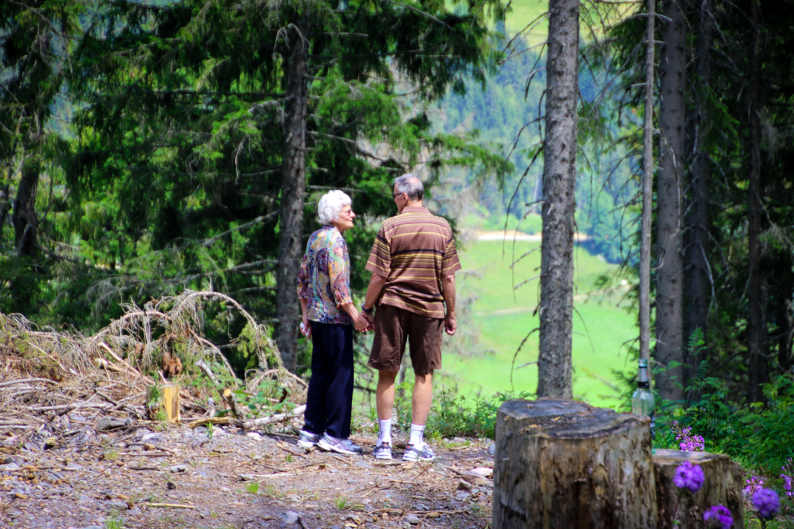

Sobre mi
Siempre me ha gustado la fotografía, desde que era un niño pequeño y tuve en mis manos mi primera cámara Polaroid. De alguna manera, el mundo tiene más sentido cuando se observa a través de una lente, y me doy cuenta que al encontrar y buscar nuevas perspectivas, comprendes ciertos aspectos de la vida más a fondo.
En mi fotografía, siempre trato de capturar la esencia del momento y
comunicar cómo experimento y siento.

En este espacio vas a encontrar algunas de las fotografías que hice
a lo largo de estos años.